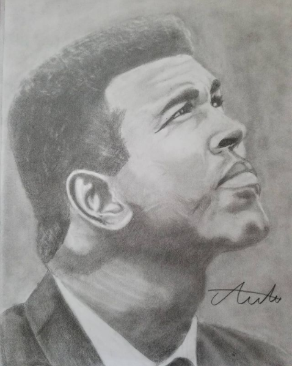
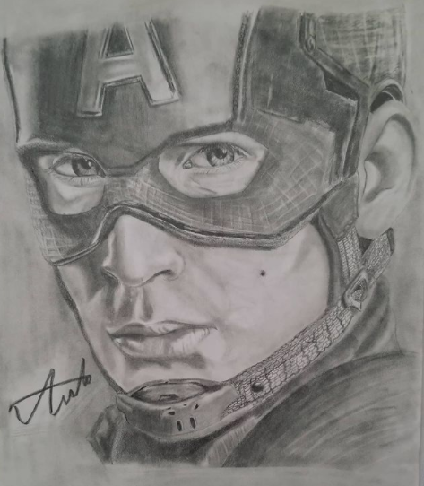
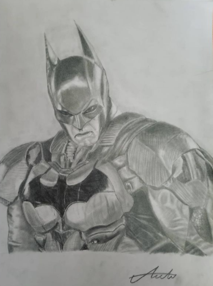

| SAMSUN
| SAMSUN-Hakkımda-
Merhaba, adım Yavuzhan ALBAYRAK. 21 Ağustos 2002 doğumluyum. Samsun'da yaşıyorum. Sakarya Üniversitesi Bilgisayar ve Bilişim Bilimleri Fakültesi Bilgisayar Mühendisliği bölümünde okuyorum. 23 Nisan Ortaokulu ve Samsun Anadolu Lisesinde eğitim aldım. Bilgisayarlara olan ilgimden ötürü bilgisayar mühendisliği okumaya karar verdim. Liseye başladığım dönemde kick boks sporuyla ilgilenmeye başladım ve hala devam ediyorum. 10 yaşımdan itibaren karakalem resim çiziyorum son dönemlerde ise dijital çizimler yapmaya başladım. UFC izlemek, oyun oynamak, müzik dinlemek, resim çizmek ve spor yapmak başta gelen hobilerimdendir.
Bazı çizimler:
  
Tüm resimler için: Albayrak.art